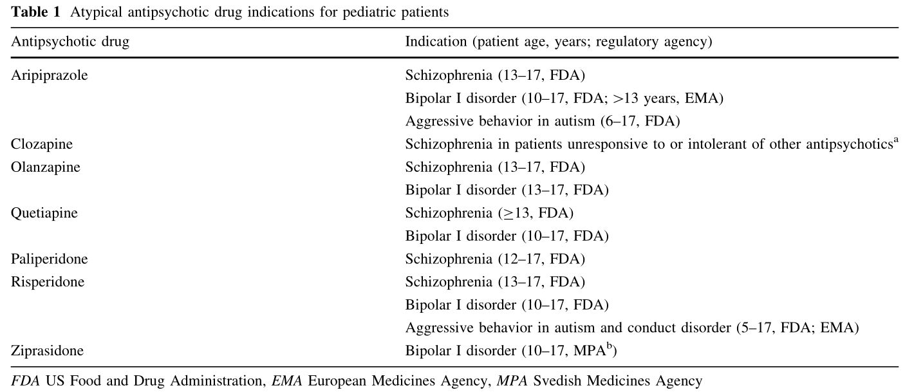

71 소아/청소년기 정신병의 약물치료
71.1 일반적 사항
소아/청소년기 조현병에 대한 항정신병 약물 치료 연구는 아직 부족하다. 18세 이하 환자에게 사용이 허가된 약물이 많지 않을뿐더러 성장과 발달에 대한 약물의 장기적 효과가 불확실하다. 성인에서 결정된 용량을 그대로 적용하는 것이 옳은 지에 대해서도 불불명하다. 그렇지만 소아/청소년 환자에 대한 임상 시험은 자발적 동의 능력을 비롯하여 법적, 윤리적 문제가 산적해있고, 부모들도 원하지 않기 때문에 환자 모집에 어려움이 많다. 따라서 믿을만한 근거를 확보하기는 요원한 것 같다.
때문에 실제 임상에서는 소아/청소년에게 아직 허가되지 않은 약물 혹은 허가되지 않은 용량으로 처방하는 경우가 많은데, 의사는 이에 대해 이익과 위험의 균형을 조심스럽게 맞춰야 하고, 예상 외의 결과가 나올 수도 있음을 환자 및 보호자에게 충분히 알려야 한다.[1] ?fig-approval에는 미국에서 청소년에게 허가된 비정형 항정신병 약물을 나열하였다. 대부분의 약물이 청소년에 대한 사용은 허가를 획득했으나, 아리피프라졸과 리스페리돈을 제외하고는 13세 미만의 소아에 대한 사용은 허가외 사항이다.

71.1.1 성장기 뇌와 항정신병 약물 치료
항정신병 약물은 수용체 발현 정도나 민감도의 변화를 통해 중추신경계의 발달과정에 영향을 끼칠 수 있다. 변연계-전전두엽 체계는 청소년기 후기까지도 발달이 완전히 끝나지 않아서, 외부 자극에 반응하여 구조를 변화시킨다. 때문에 약물치료에 유달리 민감할 수 있다. 동물실험에서 소아기 초기에 methamphetamine을 한 번만 주어도 전전두엽의 도파민 분비 뉴런의 성숙이 현저히 억제되었다. 이렇게 전전두엽의 성숙이 저하된 동물은 성인기 초기에 GABA 매개 시냅스가 40% 증가되었다.[2]
이런 연유때문인지 소아/청소년의 뇌는 약물 부작용에 훨씬 더 민감하다. 정형 항정신병 약물을 투여했을 때 어린 쥐는 성인 쥐에 비해, 추체외로 증후군의 발병 빈도가 75배 더 높았다.[3] 이와 대조적으로 시토크롬 효소 활성은 사춘기 이전 소아가 성인보다 더 높으므로, 체중에 비해 상대적으로 더 높은 용량이 필요할 수 있다. 사춘기는 성호르몬 등 내분비계의 변화가 극심한 시기인데, 프로락틴 등에 혼란을 가져오는 항정신병 약물이 예기치 못한 부작용을 나타낼 가능성이 있다. 그러나 사춘기 환자들을 대상으로 한 연구 역시 거의 없는 실정이다.[4]
71.2 급성기 약물 치료
71.2.1 약물의 선택
약물 사이의 효과 차이는 크게 나지 않으므로 역시 내약성 및 개인적 선호도에 따라 약물을 선택하게 된다. 무엇보다 추체외로 증상과 지연 운동 장애 발현이 낮은 비정형 약물이 치료의 중심이 된다.[5] 치료저항성 환자에 대해서는 성인과 마찬가지로 소아/청소년 환자에서도 클로자핀이 우수하다는 것이 확인되었다.[6–8] 그러나 이런 장점은 부작용으로 인해 상쇄된다는 견해도 있다.[9] 한번 클로자핀을 쓰기 시작하면 대체 약물을 찾기 힘들다는 것을 고려할 때, 성인이 될 때까지 클로자핀을 장기 복용했을 때 어떤 영향이 있을 지는 의문이다.
신체상에 유달리 민감한 청소년 환자에 대해 체중증가는 항정신병 약물을 선택하는 중요한 잣대가 된다. Findling 등[10]의 52주간 추적 조사하였을 때, 추적 종료 시점에서 12%만이 처음 사용했던 약물을 유지하였고, 약물을 교체한 가장 큰 이유는 체중증가였다. 클로자핀과 올란자핀 보다는 적지만 리스페리돈 역시 체중증가와 대사 부작용이 심하다고 보고되었다. Molindone은 널리 사용되는 약은 아니지만, 체중증가와 QTc 간격에 대한 영향이 적다는 점에서 소아/청소년에게 유리할 것이라는 견해가 제기되었다.[11,12]
71.2.2 용량과 병용 투여
소아/청소년 환자에게 낮은 용량을 시작하고 천천히 증량할 것을 권장하는 이유는, 체중이 작아서 용량에 따라 약물 농도가 쉽게 변하고, 신경계의 미성숙 때문에 추체외로 증후군에 민감하기 때문이다. 더군다나 소아/청소년 환자는 성인보다 폭력성이나 자타해 위험성이 낮기 때문에 성급하게 용량을 올릴 필요성도 줄어든다. 소아/청소년은 체중 차이가 심하기 때문에, 몸무게를 기준으로 용량을 정하기도 한다. 미국 소아/청소년 정신의학회1는 클로르프로마진 등가용량으로 0.5-9.0mg/kg을 권고하지만 이를 비정형 약물에 적용하기는 어렵다. 사춘기 이전에 오히려 시토크롬 활성이 높다곤 하지만, 그렇다고 해서 성인보다 kg 당 높은 용량을 사용해야 한다는 경험적 증거는 없다.
1 American Academy of Child and Adolescent Psychiatry (AACAP)
정신병적 초조나 불안, 좌불안석에 대한 벤조디아제핀 사용은 논란의 여지가 있다. 과거 행동장애나 정신지체 환자에게 벤조디아제핀을 사용했을 때 역설적으로 탈억제나 공격성 행동의 증가가 드물지 않게 나타났었다.[13,14] Kutcher[4]는 소아에게 벤조디아제핀을 사용하면 30% 정도에서 초조나 정신병적 증상이 증가한다며, 대신 저강도 항정신병 약물을 사용할 것을 권하였다.
71.2.3 급성기 초조 증상의 치료
심한 초조 또는 치료에 비협조적인 환자에게는 추체외로 증상의 위험을 무릅쓰고라도 신속히 용량을 올려야만 한다. 투약을 거부하는 환자에게는 액상형 리스페리돈이나 구강붕해형 올란다핀을 시도할 수 있다.
그마저도 거부하거나 시간이 촉박한 경우라면 주사제를 고려해야 하는데, 그 안정성이 보장되지는 않는다. 청소년 환자의 급성 초조와 공격성에 올란자핀과 지프라시돈 근육주사가 모두 효과적이고 안전하였다는 보고가 있으나[15,16], 지프라시돈을 맞은 환자 중 60%에서 과다진정을 보였다고 한다.[[17]]2
2 우리나라에는 2004년 올란자핀 주사제가 도입되었으나 18세 이하에서의 사용은 허가되지 않았다. 그나마 2017년에는 전체 허가를 자진 취하하였다. 지프라시돈 역시 2011년 허가를 자진 취하하였다. 따라서 국내에는 할로페리돌 주사제 밖에는 남지 않게 되었다.
성인에서 가장 많이 사용되는 할로페리돌과 로라제팜 주사제는 15–20%에서 행동의 탈억제를 보일 수 있으며, 드물지만 호흡 억제 가능성도 있다.3 주사제를 맞고 좌불안석을 일으킨 것을, 초조 증상이 가라앉지 않았다고 주사제가 과다 투여되는 경우도 있을 수 있다.[18]
3 모든 종류의 벤조디아제핀은 호흡 억제의 위험이 있다. 이는 중추성 무호흡, 기도 폐쇄, 산소포화도 감소 등으로 나타난다. 성인에게 정맥주사했을 때 많게는 10%에서 나타나며, 평소에 호흡기 질환이 있는 환자에서 더 위험하다. 또한 투여용량 및 투여속도와도 관련이 있다.
71.2.4 기분 증상의 치료
감수성이 예민한 청소년기에 조현병을 앓게 되면 이를 받아들이는데 성인보다 더 어려워할 수 있다. 조현병 및 기타 정신병적 장애를 앓고 있는 소아/청소년 환자 88명을 조사했을 때 28.4%가 자살사고를 포함한 심한 우울증상을 보였다.[19] 또 다른 연구에서는 95명의 초발 정신병 환자를 대상으로 전구기 증상을 조사했는데, 반수 이상의 환자가 발병 전에 우울증상을 경험했다.[20] 청소년기 우울증은 비록 치사율은 낮을 지라도 높은 빈도의 자살시도로 이어지기 때문에 적극적인 관심을 요구한다.
이러한 경우 항우울제를 사용하는 것은 성인에서보다 좀더 조심스럽다. 진단이 불확실한 경우가 많기 때문에 조증으로 전환될 위험이 높다. 또한 SSRI를 사용한 후 역설적으로 충동적, 공격적, 적대적 행동, 자해 행동 또는 자살 위험성이 악화될 수도 있다.[[21]]4 불쾌감, 자극과민성, 고양감 등 조증을 시사하는 증상을 보이면, 발프로에이트나 리튬을 미리 추가하기도 한다. 자살 위험이 높다면, 클로자핀을 미리 사용하거나 리튬을 병용해볼 수 있다.[24,25]
4 (NOTE: 항우울제가 오히려 자살위험을 높인다는 것은 오랜동안 논란이 된 주제이다. 플루옥세틴이 보급된 지 얼마 안 되었던 1990년 연속된 자살 사례가 보고되면서[22], 특히 플루옥세틴과 파록세틴이 투여 개시나 용량 변화시 자살충동을 일으킨다고 의심받았다. 이에 따라 2003년 영국의 보건위원회는 18세 이하에서의 사용을 금지시켜야 한다고 주장하였고, 2004년 미국에서는 이러한 위험을 약품설명서에 삽입하도록 하였다. 그러나 여전히 명확한 인과관계가 있는지는 불분명하다. 2004년 이후 미국에서는 한동안 이들 항우울제 처방이 눈에 띄게 감소했는데, 그랬더니 역으로 10~19 세 사이의 자살률이 증가하는 경향을 보였다.[23]
71.3 안전성과 내약성
71.3.1 체중증가
소아/청소년은 비정형 약물에 의한 체중 증가의 위험이 성인보다 높다.[26] 지나친 체중 증가는 지질 대사이상, 당뇨병, 다낭성 난소 증후군, 고혈압, 수면무호흡증, 골관절증과 같은 신체 질환을 불러 일으킨다. 그러나 기저 체중의 7% 이상 증가라는 성인의 기준을 소아/청소년에게 적용하는데는 문제가 있다. 이들은 정상적으로도 체중이 증가하는 나이이며, “유의한 체중 증가”의 기준은 존재하지 않는다.
성인에게 있어서는 약물로 유발된 체중 증가에 대해 metformin, topiramate 그리고 최근에는 samidorphan 등을 함께 투여하여 효과를 보는 경우가 있다.[27,28] 소아/청소년에서도 인슐린 저항성을 보이는 과체중 환자에게 metformin이 효과적이라는 보고가 있다.[29] 이러한 약제가 단기적으로는 효과가 있을 지 모르지만, 성장기 청소년의 당지질 대사를 변경시켰을 때 초래되는 장기적 효과에 대해서는 알려진 바가 없다.
아마도 체중증가를 일으키는 약물과 조절제를 함께 투여하는 것 보다는, 애초에 체중증가가 덜 심한 약물을 선택하는 것이 바람직할 것이다. 체중증가의 영향이 가장 적은 아리프프라졸은 이미 6세 이상의 소아에서도 사용할 수 있다. 우리나라에는 도입되지 않았지만, lurasidone이나 cariprazine과 같은 신약은 기존 비정향 약물에 비해 체중증가가 덜 하며, 소아/청소년 환자에게 사용되는 경우도 점차 늘어가고 있다.[30–32]
당뇨 및 이상지질혈증(dyslipidemia)는 성인 환자만의 전유물이 아니다, 소아/청소년에서도 항정신병 약물 투여 후 얼마든지 나타날 수 있다.[33,34] 이러한 대사성 장애는 행동 문제 조절을 위해 아주 소량의 항정신병 약물을 쓴 소아에서도 나타날 수 있다.[35]
4,000 명 이상의 소아/청소년 환자의 자료를 분석한 결과, 항정신병 약물 복용 후 2형 당뇨병이 발생할 오즈비는 3,23, 심혈관계 문제가 발생할 오즈비는 2.70이었다.[36] 약 300명의 자료를 조사한 Correll 등[26]의 연구에서는 올란자핀과 퀘티아핀을 평균 10주 약물을 복용하였을 때, 체중은 각가 8.5kg, 6.1kg 증가했으며, 그 밖에도 총 콜레스테롤, 중성지방, 저밀도지단백 등이 모두 유의하게 증가하였다. 리스페리돈, 아리피프라졸 역시 4~5kg의 체중증가를 보였으며, 유일하게 아리피프로졸만이 지질지표에 미치는 영향이 없었다.
하지만 성인에서의 연구결과와 마찬가지로, 아직 약물에 노출되지 않은 초발 청소년 환자들도 이미 당지질 대사의 이상이 발견되며, 이는 약물의 영향과 상관없는 조현병 병태생리의 일부임을 시사한다.[37]
71.3.2 심혈관계 영향
1,2세대 항정신병약물 모두 corrected QT (QTc) 간격의 연장을 초래하여, 심실 부정맥 (torsades de pointes) 위험을 높일 수 있다. 특히 Ziprasidone, quetiapine과 thioridazine이 QTc 연장과 가장 관련이 깊다. QTc 연장은 용량의존적이고, 연령이 높을 수록 위험도가 증가하기 때문에 소아/청소년은 중장년에 비해서는 그나마 자유롭다고 볼 수 있다.[38,39] 그러나 선천적 QTc 간격 연장 증후군5과 같은 경우에는 어렸을 때 부터 위험할 수 있다. 이 밖에도 자살 시도나 실수로 인해 과다 용량을 한꺼번에 복용하였을 때, 평소 심전도 모니터링에서 QTc의 증가가 관찰되었을 때, QTc를 증가시킬 수 있는 다른 약물을 함께 복용하고 있을 때는 좀더 면밀한 추적관찰이 필요하다.[40]
5 Congenital long QT syndrome (LQTS): 유전적 결함으로 인해 심근 세포의 이온통로가 제대로 작동하지 않아 재분극이 원할하게 일어나지 않는 질환. KCNQ1 (LQT1), KCNH2 (LQT2), 그리고 SCN5A (LQT3) 유전자 이상이 대부분이다. 단순히 QTc가 450ms 이상인 것외에도 임상적 소견을 종합하여 진단을 내리나, 진단특이성이 높지 않다. 평상시에는 QTc가 정상이다가 약물에 의해 자극되면서 처음 발견되기도 한다.
71.3.3 고프로락틴 혈증
정형 항정신병 약물은 모두 사용 초기에 프로락틴의 혈중 농도를 증가시키며, 오래 사용하다 보면 저절로 정상 수치로 돌아오기도 한다. 2세대 약물은 D2 수용체 친화도나 해리 속도가 약물마다 다양하기 때문에 일관된 경과를 예측하기 어렵다. 성인에서와 같이 리스페리돈은 올란자팬, 퀘티아핀에 비해 유의하게 높은 프로락틴 증가를 초래하였다.[41,42] 역으로 클로자핀, 아리피프라졸은 프로락틴에 대한 효과가 낮은 편이다.
프로락틴 증가의 효과는 사춘기 전 소아에서는 거의 겉으로 드러나지 않으나, 사춘기를 지나는 여성에게는 확연하게 드러난다. 소아/청소년의 고프로락틴 혈증은 사춘기 성적 발달 지연 및 월경불순, 골밀도 감소 등의 성장 지연을 일으킬 수 있다. 이렇게 시작된 고프로락틴 혈증은 종종 시간이 지나면서 정상 수준으로 돌아오고 사춘기가 온 이후에는 그 영향을 잘 느끼지 못하지만[33], 성별을 막론하고 성호르몬의 분비를 늦추어 성적 성숙을 지연시키기 때문에, 소아/청소년 환자의 자아상 형성에 막대한 영향을 미친다는 것을 명심해야 한다.[43]
71.3.4 신경학적 부작용
소아/청소년 환자는 성인보다 추체외로 증후군에 대체로 민감하다.[44–46] 성인에서의 추체외로 증상 발생 여부는 D2 수용체의 점유율과 상관이 있는데, 소아/청소년 기는 아직 도파민 체계가 덜 성숙되어 있고, D2 수용체의 수 및 뇌 조직 내 분포가 급격히 변화하는 시기이기 때문에 성인과는 다른 양상으로 반응할 수 있다.[47,48] 테스토스테론이나 에스트로겐과 같은 성호르몬은 도파민 체계 성숙에 중대한 영향을 미치는데, 고프로락틴혈증때문에 성호르몬 수치가 낮아지면 성숙이 늦어져 부작용에 대한 취약성이 지속될 수 있다.[49]
Carbon 등[50]이 평균 13.6세인 342 명의 소아환자를 추적조사하였을 때, 무려 15.2%에서 추체외로 증후군이 발생하였으며, 아리피프라졸 투여군이 27.3%로 가장 높았다. 흥미로운 것은 운동이상증(dyskinesia)만 따로 떼서 보면 나이가 어릴수록 잦고 아리피프라졸 투여군에서 빈도가 가장 낮았던 반면, 좌불안석은 나이가 많을수록, 아리피프라졸을 사용했을수록 빈번했다는 것이다. 특히 소아/청소년의 좌불안석은 주의집중 곤란, 과잉행동과 감별이 매우 어렵다.
지연성 운동장애와 금단 운동이상증(withdrawal dyskinesia)의 위험이 소아/청소년 환자에서 더 높은 지는 확인되지 않았다. 소규모 연구에서는 그 위험이 성인보다 높지 않은 것으로 나타났다.[51] 만약 생긴다 해도 다행히 그 대부분은 심하지 않았고 시간이 지나면서 호전되었다.[45] 그러나 여전히 무시할 수 없는 비율의 환자들에게서 지연성 운동장애가 발생하며, 소아/청소년 기에 발병한 환자들이 앞으로도 오랫동안 항정신병 약물에 노출되어야 한다는 사실은 깊은 우려를 자아낸다.[52]
신경이완제 악성 증후군(NMS) 역시 소아/청소년에게서 발생할 수 있다. Silva 등[53]이 90년대 말까지 발표된 18세 이하 소아/청소년에서 발생한 77례를 검토했을 때, 9%가 사망하였고 20%는 회복되었으나 심각한 후유증을 동반하였다. 클로자핀을 비롯한 비정형 약물은 NMS를 일으킬 위험이 상대적으로 낮다고 하나, 200mg 정도의 클로자핀을 복용하던 16세 소년이 NMS를 일으켰던 증례가 보고된 적이 있다.[54] 이와는 대조적으로 리스페리돈과 퀘티아핀을 병용투여하다가 NMS가 발생하였고, 이후 클로자핀으로 변경하여 상태가 안정된 증례가 한국에서 보고되었다.[55]
최근에는 소아/청소년 환자에게 거의 대부분 비정형 약물을 투여하므로, NMS의 발현 양상도 비전형적인 경우가 많다. 발열과 경직을 모두 보이는 경우는 절반도 채 안 되며, 단지 CPK만이 예외없이 상승한다.[56] 다행히 비정형 약물 투여 후 발생한 NMS의 경우 치사율은 매우 낮았으며, 약물을 끊고 보존적 치료만 하여도 후유증없이 회복되었다.[56]
71.3.5 혈액학적 부작용
클로자핀을 투여하는 소아/청소년 환자는 성인과 마찬가지 기준에 입각하여 모니터링 받는다. 그러나 성인에 비해 혈액학적 부작용이 일어날 위험이 조금 더 높은 편이다. Gerbino-Rosen 등[63]이 청소년 환자 172명에게 클로자핀을 고정 용량으로 8개월간 투여하였을 때 호중구감소증 23명 (13%), 무과립구증 1명 (0.6%)이었다. 전체 24명 중 11명은 클로자핀을 재투여하는데 성공했고 8명은 사용을 중단하였다. Schneider 등[64]은 조기발병 조현병 환자(EOS)를 대상으로 체계적 문헌고찰을 하였는데, 클로자핀 투여 후 호중구감소증이 6~15% 보고되었으나 대개는 일과성이었고 무과립구증은 0.1%에 지나지 않았다. 종합적으로 사소한 혈액학적 부작용은 성인에서보다 좀더 많은 편이다. 치료가 중단될 정도의 심각한 부작용은 성인과 대동소이하다.
71.4 안정 및 유지 단계에서의 치료
초발 환자에서는 첫 삽화의 유형에 따라 치료 전략이 달라진다. 급성 발병이고 병전 기능이 좋았으며, 증상이 주로 양성증상에 국한되었고 약물에 대한 반응이 양호했던 경우에는 관해 후 1년 정도 약물 치료를 유지한다. 1년 이상 증상이 없으면 매달 용량의 ¼ 씩 감량하여 중단하되, 증상이 악화되면 즉각 약물을 다시 사용한다. 호전은 되었으나 정신병적 증상이 남아있다면, 최저 유효 용량을 기약없이 유지해야 한다.
소아에서 장기 지속형 주사제에 대한 연구는 드문데, 추체외로 증후군에 민감하다는 것과 비순응 문제가 성인처럼 심각하지 않다는 것을 감안하여 가급적 쓰지 않는 편이다.
71.4.1 음성증상의 관리
소아/청소년 환자에서의 음성증상에 대한 진단 및 치료는 성인에서보다도 힘든 과제이다. 병전 기능과 비교하여 퇴행된 정도를 통해 음성증상을 가늠하는 성인에 비해, 소아/청소년 환자는 제대로된 병전 기능에 대한 자료가 없다. 성인처럼 사회적/직업적 기능에 대한 정의가 명확하지 않아, 기껏해야 학업이나 또래 관계를 살피게 되는데, 이 역시 음성증상을 평가하기엔 적절하지 못하다. 그럼에도 불구하고 음성 증상은 정신병 전구기에 가장 흔한 증상이기도 하며, 이후 치료 실패와 불량한 예후를 예측하는 강력한 지표이다. [65–67]
그래서인지 음성증상 치료를 위한 항정신병 약물의 효과에 대해서도 아직 충분히 조사된 바가 없다. 성인 환자에서는 클로자핀과 소위 3세대 약물로 불리우는 약물 들, 그리고 이 둘의 조합이 음성 증상에 효과적이라는 주장이 있지만[68,69], 소아/청소년에게도 해당될지는 두고 봐야 알 것 같다.
71.4.2 치료저항성 환자
소아/청소년 조현병 환자의 약 30%가 치료에서 만족스러운 반응을 얻지 못한다. 소아/청소년에게는 공격적인 약물치료를 하는 것 보다는 우선 정신사회적, 재활 및 행동 요법, 가족 지원과 같은 비약물적 개입을 좀더 확대한다. 약물치료가 벽에 부딪혔을 때 가장 먼저 해야할 일은 약물자체에 의한 의인성(iatrogenic) 음성 증상 혹은 좌불안석의 유무를 밝히는 것이다. 그게 아니라면, 성인과 대등한 정도로 용량을 증가시켜 본다. 치료실패가 확실해지면, 한두차례에 걸쳐 다른 항정신병 약물을 시도해본 후 최종적으로는 클로자핀으로 교체한다. 클로자핀에 대해서도 저항을 보이는 경우, 성인에서는 다양한 약물을 병용 투여하는 전략을 시도해보기도 하지만, 소아/청소년의 경우 내약성 문제때문에 보다 신중해야 한다.
71.4.2.1 클로자핀 사용
소아/청소년 환자에 대한 클로자핀 사용은 아직 정식 허가를 받지 못하였지만, 현실적으로는 세계 각국에서 보편적으로 사용되고 있다. 미국의 경우 10-19세 환자에 대한 클로자핀 사용빈도는 성인에서의 빈도와 거의 차이가 없다.[70] 발병한지 얼마 안되었거나 초발인 환자에게 최대한 공격적인 치료를 시도하여, 장기 예후를 호전시키고자 하는 추세를 반영하고 있는 듯 하다. 대부분의 의사들은 성인에서와 동일한 모니터링 기준을 적용해도 비교적 안전하게 클로자핀을 사용할 수 있다고 믿는다. 오히려 조기 발병 정신병에서 클로자핀 투여를 주저하면, 득보다 실이 많은 것이라는 주장도 있다. 그러나 미국 이외 국가에서는 여전히 소아/청소년에서 클로자핀을 처방하는 경우가 극히 드물다. 아마도 임상가의 경험 부족, 조기 발병 정신병에 대한 인식 부족이나, 허가 외 처방에 대한 심리적 장벽, 한번 클로자핀을 사용하면 영원히 끊을 수 없을 것이라는 오해 등이 영향을 미쳤을 것이다.
Sagreiya 등[71]은 소아 집단에서 클로자핀을 다른 비정형 약물과 비교했을 때 이상반응이 오히려 적었다고 보고하였다. 그리 심각하지 않은 혈액학적 부작용이나 경련 발생 비율은 성인보다 높을 수 있지만, 치명적일 수 있는 부작용은 거의 없었다.[72] 체중 증가와 대사 증후군의 빈도가 성인에 비해 더 높은 것 같지는 않았지만, 환아의 평생 건강에 지속적인 영향을 미칠 가능성이 있다.[72]
한편 소아/청소년에서 클로자핀을 투여할 때는 경련발작에 특히 신경을 써야 한다.[73] 치료 전에 이미 뇌파 이상이 발견되면 클로자핀 사용을 포기하거나 발프로에이트를 병용할 수 있다. 3개월에 한번 정도 뇌파를 추적하여 간질 위험을 모니터링 하는 것이 필요하다. 뇌파 이상이 확실하면 용량을 줄여야 할 수 있다. 목표 용량은 성인보다 좀 낮게 잡으며, 일부 환자는 상당히 낮은 용량에서도 반응한다는 것을 기억한다. 보통 150~200mg/day로 증량하되, 일부 환자는 300mg/day까지도 가능하다. 400mg/day 이상이 되면 5%에서 간질발작이 일어난다.
71.5 전기경련 치료
전기경련 치료 (ECT)는 조현병 뿐 아니라, 뚜렛 장애, 자폐증, 기분장애, 긴장증 등에 효과적이다. 비록 소규모의 증례보고 또는 단기간 개방 연구에 그치고 있긴 하지만, 조기 발병 정신병 환자에게 전기경련 치료를 성공적으로 수행한 사례는 전세계에서 고루 보고되고 있다.[74–76] 그럼에도 불구하고 전문가 집단뿐 아니라 대중들은 소아/청소년에 대한 ECT 사용에 대해 압도적으로 부정적 의견을 갖고 있다. 아무래도 의사결정을 대신 해야하는 보호자들이 자기 자식에게 이런 치료는 행하고 싶지 않아하기 때문인 듯 하다. 학계에서는 적극 권장하여 2004년에 미국 소아/청소년 정신의학회(AACAP)가 소아/청소년에게 ECT를 할 때 따라야할 치료 가이드라인을 발표할 정도였으나[77], 아직도 ECT가 분명 도움이 될 법한 임상 상황에서도 잘 쓰여지지 않고 있다.[78]
71.5.1 적응증
AACAP 가이드라인에서 클로자핀을 포함한 약물치료가 실패했을 경우 마지막 수단으로 ECT 사용을 권장한다. 그 외에는 내약성이 떨어지거나 약물치료 금기사항이 있을 때, 혹은 긴장증이나 NMS인 경우에 실시한다.[77] 성인에서와 같이 ECT는 긴장증이나 치료저항적인 기분 장애에서는 가시적인 치료 성과를 보이나, 치료저항성 조현병에서의 반응률은 42~54% 정도로 기대에 미치진 못한다.[78]
ECT를 한다고 해도 항정신병 약물을 끊는 것이 아니므로 엄밀하게 따지면 약물-ECT 병용치료가 되겠다. 성인에서는 ECT를 하고난 후 클로자핀에 대한 반응성이 증가한다는 주장도 제기될 정도로 ECT-클로자핀 조합에 대한 관심이 크다.[79,80] 그러나 소아/청소년 군에서는 사례 수가 극히 적어서, ECT-클로자핀 병용 투여에 대한 효과와 안정성에 대해 무어라 말하기 어렵다. 청소년 치료저항성 환자를 대상으로 한 연구에서 ECT-클로자핀 병용군과 ECT 단독치료군 간에 단기 반응률은 차이가 없었지만, 1년간 재입원률은 전자가 의미있게 더 낮았다고 보고되었다.[81] 동일 저자들은 후속 연구[82]에서, ECT 유지 치료를 받은 군과 항정신병 약물 유지 치료를 받은 청소년 환자군의 장기 예후를 조사하였다. 그 결과 ECT 군은 더 일찍 발병했었고 치료를 시작할 당시 상태도 더 나빴지만, 이후 치료 반응률이나 기능 정도는 유사하여 적어도 ECT가 약물 치료만큼은 유지 치료에서도 효과적이라고 하였다.
71.5.2 부작용
소아/청소년에서 ECT를 시행했을 때 특히 우려되는 부작용은 지속성 경련(prolonged seizures)와 지연성 경련(tardive seizures)이다. 지속성 경련은 180초 이상 지속되는 경련으로, 많게는 소아/청소년 환자의 10%에서 발생하며, 이는 성인 환자에서의 빈도인 1.1%보다 매우 높다.[83–85] 지속성 경련이 나타나면 뒤이어 지연성 경련이 뒤따를 수 있기 때문에, ECT 시행하는 동안 및 한참 후에도 주의 깊게 뇌파를 모니터링하면서 빨리 발견, 치료해야 한다.[86] 경련이 지속되면 methohexital, diazepam, lorazepam으로 치료한다.[77] 이전에 지속성 경련을 일으켰던 환자라면 항경련 특성이 있는 propofol을 마취유도제로 사용할 수 있다.
ECT 시행 후 24~48시간이 지난 후 발생하는 경련을 지연성 경련이라 한다. 발생 빈도는 0~5%이고, ECT 도중 지속성 경련이 있으면 발생확률이 높아진다. 이런 상황이 생기면 수시로 뇌파를 검사하거나, ECT 도중이라도 항경련제를 사용해야 할 수도 있다.[77]
인지 부작용은 성인과 비슷하며 일시적이다. Cohen 등[87]은 양측성 ECT를 받은 청소년 환자군에서 3.5년 후 대조군에 비해 장기적 인지 장해를 발견하지 못했다고 했다. Ghaziuddin 등[88]이 단극성 및 양극성 우울증으로 ECT를 받은 16명의 청소년을 추적 조사했을 때에도, 초반 며칠 동안은 주의력, 집중, 언어 및 시각적 회상과 언어 유창성에서 장해가 있었으나, 마지막 치료 후 8.5개월 후 시행된 두 번째 검사에서는 완전히 회복된 것으로 나타났다. ECT에 의한 인지부작용이 나이가 많을수록 심하다는 것을 감안하면, 소아/청소년은 그런 우려에서는 자유로운 듯 하다.
71.5.3 금기 및 제도적 규제
소아/청소년에서 ECT에 대한 절대적 금기는 없다. 심지어 뇌종양, 기형, 개두술 등과 같은 기질적 뇌 이상이 있을 때도 시행할 수 있다.[89] 뇌전증 환자에게 있어 ECT가 증세를 악화시켰다는 보고는 없고, 오히려 경련발작의 빈도를 낮추기도 한다.[90] 굳이 금기사항을 들다면, 뇌내 압력이 증가하는 중추신경계 종양, 최근 일어난 심근경색을 들 수 있다.
국가나 지방자치단체에 따라 소아/청소년에게 ECT를 제도적으로 금지하는 경우가 있다. 예를 들어, 미국 캘리포니아 주에서는 12살 미만, 테네시주에서는 14세 미만, 텍사스주와 콜로라도주에서는 16세 미만의 소아/청소년에게는 ECT 치료를 허용하지 않는다. 이는 어린 나이의 소아/청소년이 아직, 자신이 받는 치료의 혜택과 잠재적 위험을 이해하고 합리적 결정을 내릴 수 없다고 판단하기 때문이다. 게다가 과거 지적장애나 행동문제를 보이는 환자에게 행동통제의 목적으로 ECT를 시행했었던 어두운 역사에 대한 반성이 포함되어 있다. 아동의 인지 능력을 감안하면 제 3자가 동의할 수 밖에 없는데, 적절하고 엄격한 제도적 감시체계가 없으면 환자의 권리가 손상될 수 있다.[78] 반면에 법적 규제로 꼭 필요한 치료를 받지 못하는 경우에도 심각한 윤리적 문제가 있을 수 있다는 점을 주지해야 한다.[78]